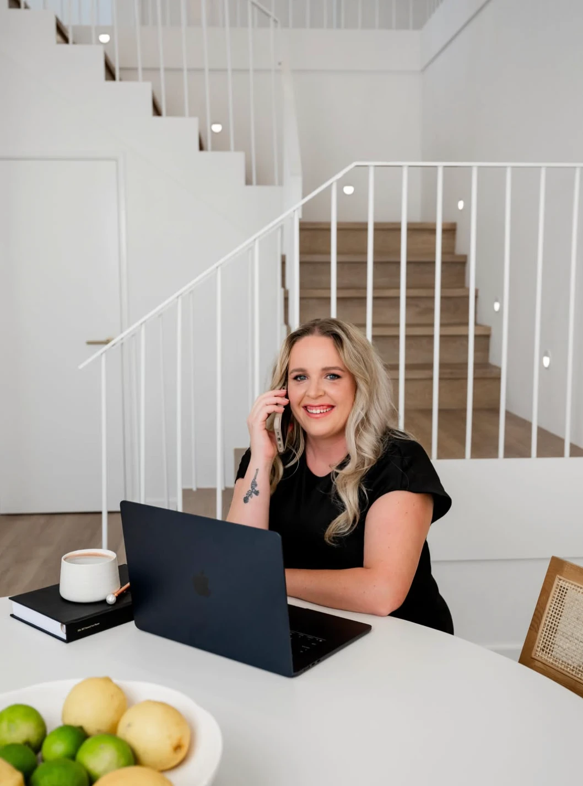
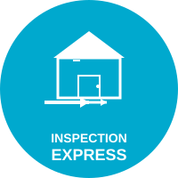

ABOUT
Founder & Operations Leadership Specialist
15+ years in real estate property management operations across multiple roles and agency types

Hands-On Operations Leader
Kenslee's career began in the trenble managing property portfolios and leading on-ground teams. She progressed through every major operational function: tenant management, compliance, maintenance coordination, and team leadership. This wasn't theoretical knowledge — it was learned by doing it every day.
Head of Department & Strategic Leadership
She stepped into Head of Department roles, managing operational teams, implementing systems, building processes, and driving accountability. She learned how to scale operations, develop leaders, and move agencies from chaotic to efficient.
Business Development & Revenue Generation
In BDM roles, Kenslee discovered something critical: your operations directly impact your revenue potential. Poor processes lose clients. Inefficient teams can't handle growth. Untrained staff can't convert leads. She worked with agencies to turn leads into revenue through systematic lead management, team coaching, and implementation expertise. This isn't just about operations — it's about what that means for your bottom line.
Systems Implementation Specialist
She then partnered with property management software providers, learning enterprise systems deeply and helping agencies actually use them properly. She saw that software alone never fixes operational problems.
The OCD PM Approach
Real improvement requires three things: genuine operational experience (she has it), professional implementation (not just advice), and understanding that better operations mean better revenue. The OCD PM combines all three. We step in as your operational partner, we fix the issues, we make your systems work, and we ensure your team can sustain it. Because operations that work translate to businesses that grow.
SOFTWARE EXPERTISE & IMPLEMENTATION
Kenslee doesn't just recommend software — she implements it and makes it work. Her hands-on experience with leading property management platforms means she understands the real-world challenges of getting your team to adopt and master them for maximum efficiency.

Business Development Manager (WA)
Former BDM with deep expertise in the platform's full feature set, including advanced AI capabilities. Kenslee's hands-on experience and advocacy make her the ideal partner for seamless implementation.
What She'll Help With:
Extensive Multi-Agency Experience
Years of proven implementation success across multiple agencies. Kenslee has streamlined workflows, improved team accountability, and maximized the platform's potential for operational excellence.
What She'll Help With:
Beyond These Platforms
Your agency uses Property Tree, Console Cloud, Ailo, or another real estate platform? Kenslee's 15+ years of multi-platform property management operations experience makes her a fast learner. Her proven implementation methodology adapts to any software, ensuring your team adopts systems properly and drives real operational and revenue results — regardless of which platform you're using.